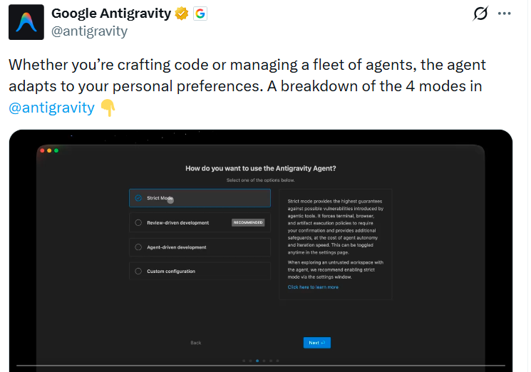
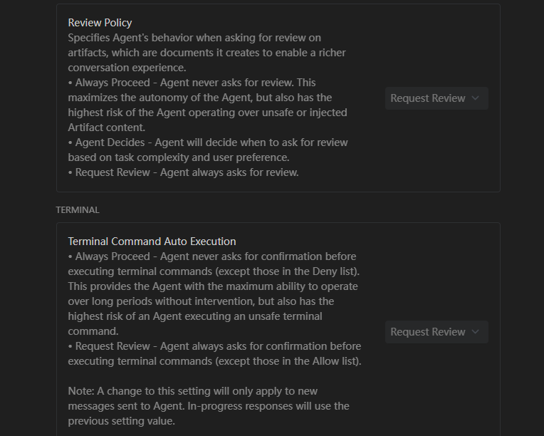
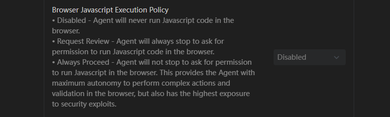
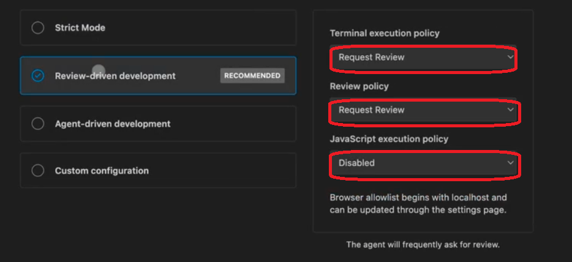
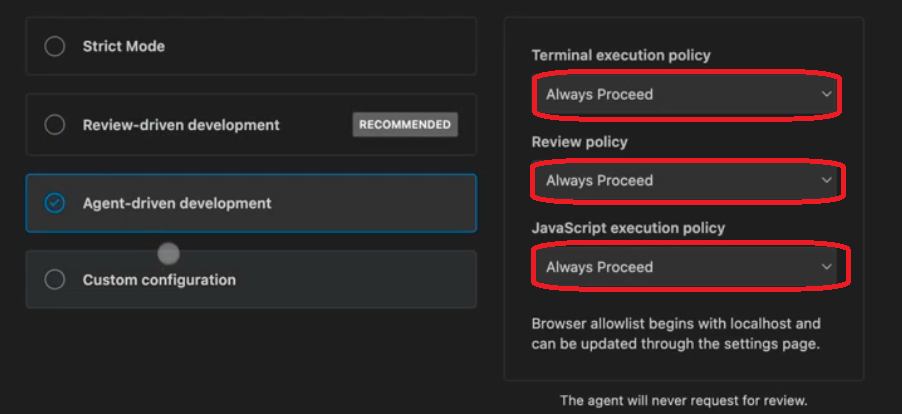
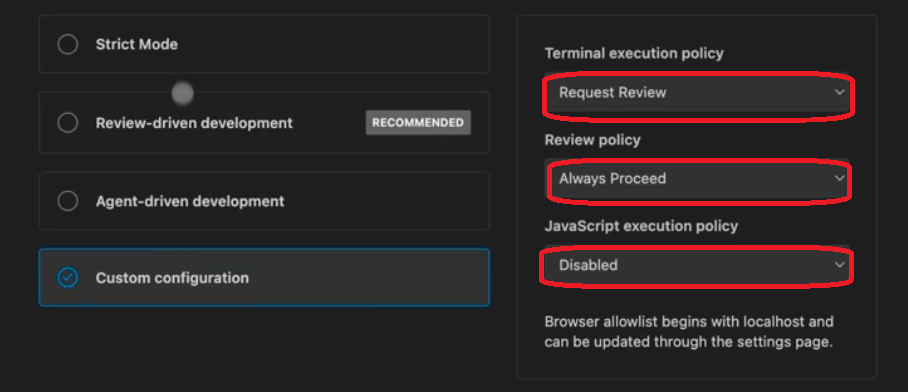

在前面发的Antigravity相关的文章中，有读者问到如果不想在Agent运行的过程中和它互动，要如何设置。这篇文章或许有答案。
这两天，Antigravity推出了四种Agent模式，分别是Strict Mode，Review-driven development，Agent-driven development，Custom configuration

Strict Mode
严格模式。在处理生产环境或核心系统时，任何微小的自动化错误都可能导致不可逆的后果，如删库，配置错误等。Strict Mode模式要求你务必审查所有更改，这种配置将 Agent 降级为建议者而非执行者。它强制人类开发者作为最后一道防线，确保每一行代码和每一个命令都经过人工确认，并引入 Gemini Code Assist 等外部审计工具来对冲 AI 的幻觉风险。
在Strict Mode模式下，Review Policy策略、 Terminal Command Auto Execution、 JavaScript Execution Policy都是Disable状态。


Review-driven development
审查驱动开发模式。默认首选模式，优先强调学习和细致的代码编写。
在审查驱动开发模式下，Terminal execution policy和Review Policy策略都是Request Review，这是为了让开发者在 AI 执行操作前看到“它要做什么”和“它为什么要这么做”。JavaScript execution policy策略为Disable，这是为了防止 Agent 在后台静默运行复杂的逻辑脚本，确保代码逻辑的透明度。
建议从这个模式开始，等更熟练后再调整设置。

Agent-driven development
代理驱动开发模式。这个模式非常适合忙碌的 AI 工程师----已经配置了一些技能并在管理多个 AI Agent。
它能通过在允许列表 or 阻止列表中添加更多条目来优化你的工作流。
在代理驱动开发模式下，Terminal execution policy和Review Policy策略都是Always Proceed；JavaScript execution policy策略也是Always Proceed。用这种模式，你只需要看结果，不需要中间的确认过程。

Custom configuration
自定义配置模式。当你希望为特定工作流定制Agent策略时可以选择自定义配置模式。有时你会希望让 Agent 主导生成，但仍坚持先审批计划，这种模式就很合适。
自定义配置模式下，Terminal execution policy和Review Policy策略、以及JavaScript execution policy策略可以自定义配置。
